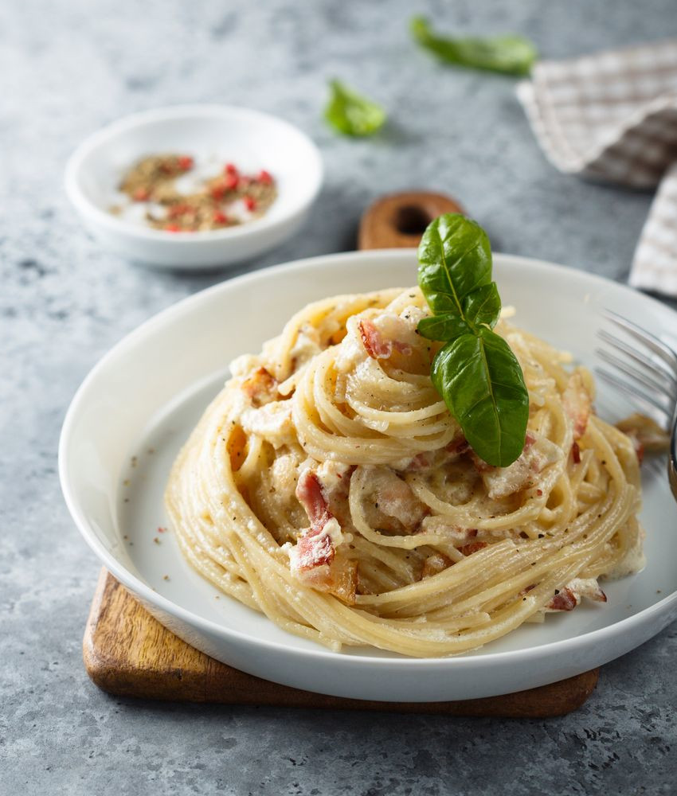

Carbonara
Description
L'autentica Carbonara!
Carbonara is an Italian pasta dish from Rome made with eggs, hard cheese, cured pork and black pepper. The dish arrived at its modern form, with its current name, in the middle of the 20th century. The cheese is usually Pecorino Romano, Parmigiano-Reggiano, or a combination of the two.
Ingredients
- Main Ingredients:
- 175g of Guanciale, Pancetta or Block Bacon; (cut into 0.5cm thick slices and then into batons.)
- 2 Large Eggs;
- 2 Egg Yolks;
- For Seasoning:
- Black Pepper;
- Salt;
- To Serve:
- Fresh Parmesan Cheese, Parmigiano Reggiano or Pecorino; (finely chopped/diced)
- Fresh Parsley; (finely chopped/diced)
- 400g of Dried Spaghetti.
How to Prepare
- Carbonara Sauce:
Place the 2 Large Eggs and 2 Yolks in a large bowl. Whisk to combine. Then stir in the Cheese of your choice and Black Pepper; (it is highly recommended to use one of the mentioned cheeses in the ingredients.) - Cook The Pasta:
Bring a very large pot of water with 1 or 2 table spoons of salt to the boil. The amount of water should be enough for the pasta to float inside the pot and the taste should resemble sea water. Add the pasta and let it cook. Start tasting the pasta 1 minute before the recommended cooking time as per the packet instructions; - Prepare the Guanciale:
While the pasta is cooking, place the Guanciale(or Pancetta/Bancon) in a non stick pan over medium high heat. Cook for 4 to 5 minutes until golden. No oil is needed – as the guanciale heats up, the fat will melt making it fry on its own fat; - Add the Pasta to the Guanciale:
When the pasta is ready, transfer it directly from the pot into the frying pan using tongs; - Mixing the Sauce with the Pasta:
Turn off the heat and add the sauce to the pan with Spaghetti and Guanciale. Add around 1 kitchen ladle of the pasta water into the and stir vigorously for 1 minute - as the sauce transforms from watery to creamy it clings to the pasta strands. (the heat has to be turned off, otherwise the sauce will turn into scrambled eggs).
How to Serve
- Serve immediately, garnished with a little extra Cheese if desired, a pinch of Black Pepper and finely chopped Parsley;
- Enjoy yourself.